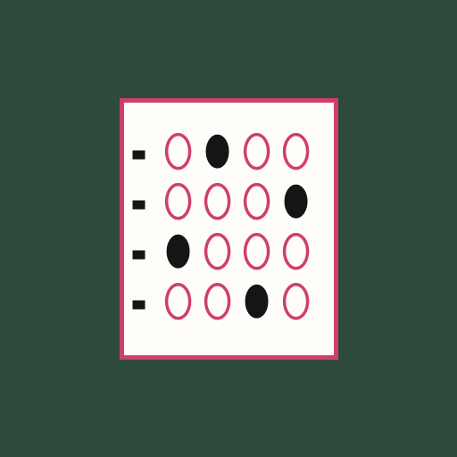
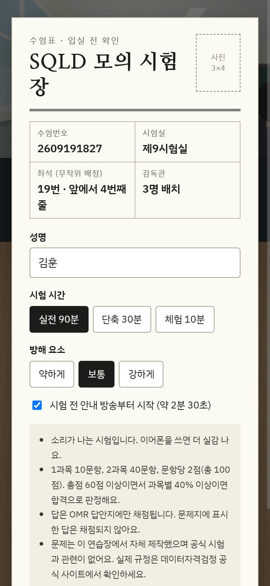
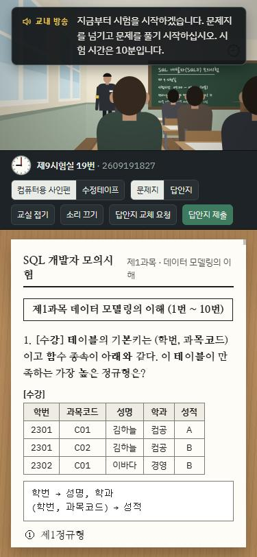
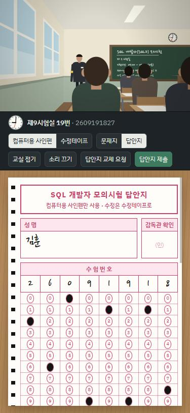

- 가격
- 무료
- 카테고리
- 교육
- 오프라인
- 지원
- 기기
- 폰 · 태블릿 · PC
미리 보기



앱 소개
시험장 분위기까지 연습하는 SQL 자격시험 모의고사
시험장에 들어가면 머리가 하얘지는 사람을 위한 모의고사입니다. 학교 교실을 그대로 옮겨 와서, 무작위로 배정된 자리에 앉아 실제 시험처럼 90분을 보내게 합니다.
감독관이 교실을 돌고, 교내 방송이 시작과 종료를 알리고, 주변에서는 기침 소리와 종이 넘기는 소리가 들립니다. 답은 문제지가 아니라 OMR 답안지에 사인펜으로 칠해야 하고, 고칠 때는 수정테이프를 써야 합니다.
주요 기능
- 1과목 10문항, 2과목 40문항, 총 100점. 과목별 과락까지 판정
- 2과목은 SQL 실행 결과와 오류를 찾는 코드 중심 문제
- 감독관 순찰, 본인 확인, 교내 방송, 방해 소음 (강도 선택)
- 문제지와 OMR 답안지 분리, 중복 표기는 오답, 답안지 교체 요청
- 채점 후 문항별 해설과 '문제지 답과 OMR 답이 다른 문항' 확인
- 실전 90분 · 단축 30분 · 체험 10분 모드
설치 방법
안드로이드
Chrome에서 앱을 열고 오른쪽 위 ⋮ 메뉴의 '앱 설치' 또는 '홈 화면에 추가'를 누릅니다.
아이폰 · 아이패드
Safari에서 앱을 열고 아래쪽 공유 버튼의 '홈 화면에 추가'를 누릅니다.
PC
Chrome이나 Edge에서 앱을 열고 주소창 오른쪽의 설치 아이콘을 누릅니다.
알아 두세요
공식 시험 기관과 관련 없는 비공식 연습 앱입니다. 문제는 모두 자체 제작했습니다. 실제 시험 규정은 데이터자격검정 공식 사이트에서 확인하세요.
정보
| 개발자 | junghoon1118 |
|---|---|
| 업데이트 | 2026-11-09 |
| 검색어 | SQLD, SQL 개발자, 모의고사, 모의시험, 기출 대비, OMR, 시험장 연습, 자격증 |
| 개인정보 | 개인정보를 수집하지 않습니다. 입력한 이름은 시험 화면에만 쓰이고 어디에도 저장하거나 보내지 않습니다. |
| 주소 | https://junghoon1118.github.io/SQLD/ |